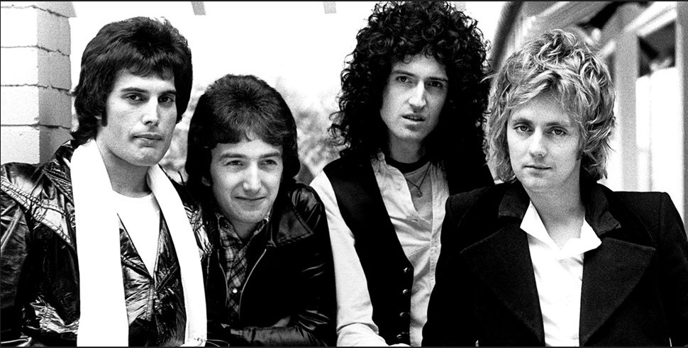

Queen
Banda británica de rock formada en 1970 en Londres

Integrantes
Brian May
Freddie Mercury
John Deacon
Roger Taylor
Discografia
Grandes éxitos de Queen
Año
Disco
1975
A Night At The Opera
1986
A Kind Of Magic
1989
The Miracle
"A Kind of Magic" fue el álbum más exitoso.
Sitio web oficial
www.queenonline.com